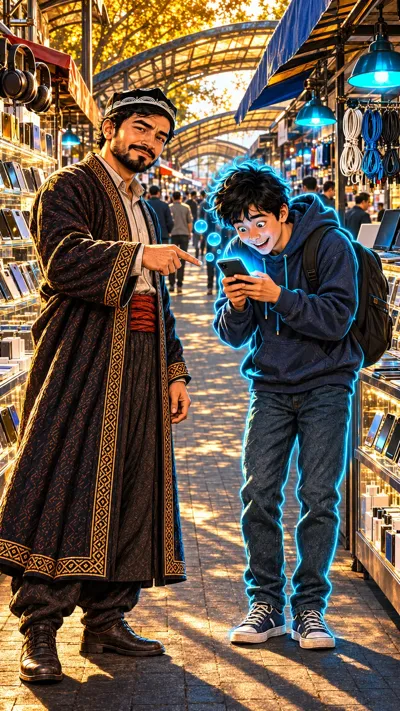

1-sahna — 9:16 (tik), 6 s

Ovoz
Usta: «Telefoning jiringlaganda sen telefonni emas, telefon seni boshqaradi.»
Kamera: Ustaga sekin yaqinlashish — sir aytayotgandekVertical 9:16, 6 seconds. Start from the attached image. Camera: slow push-in from the medium shot toward Usta's face. Usta looks into the lens with a knowing half-smile and speaks, his pointing hand moves slowly toward Diyor's phone, one eyebrow rises on «telefon seni boshqaradi». Diyor stays bent over the glowing phone, grinning, mouth closed; small round bubbles keep floating up from the screen; far away shoppers keep walking, the blue lamps sway gently. Usta says in Uzbek, in a calm deep warm male voice of about 30-35: "Telefoning jiringlaganda sen telefonni emas, telefon seni boshqaradi." Keep both characters exactly as in the image: Usta about 30, smooth young skin, short full black beard, black doppi with a white arch pattern, dark embroidered chapan with a red sash; Diyor about 20, round boyish face, messy jet-black hair. Same faces, five fingers on each hand. Diyor has a thin bright cyan-blue neon outline along his whole silhouette with a soft glow; it moves with him in every frame and never disappears. Nobody else has it. One continuous shot, no cuts. Faces stay exactly as in the image from the first to the last frame. The blue lamps of the bazaar stay neon blue. Keep the semi-realistic hand-painted cartoon style of the image for the whole clip, never photorealistic. No readable text, no letters, no subtitles, no captions, no logos. The camera never stops moving.